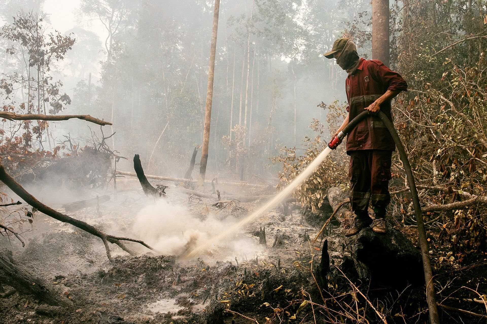
Dry Season Waltz
What NASA's new radar saw on Borneo's peat through the 2026 dry season, while cloud and smoke hid it from every camera.
Team Garugons
Tommy, Reagan, Gabriel, Kalent, Jan Hoe, Anson
NASA Space Apps Challenge 2026 · Dancing with the SARs
Photo: putting out a peat fire, 2019. DenY Krisbiyantoro, Wikimedia Commons, CC BY-SA 4.0.
01 / 07
Peat does not burn until someone drains it
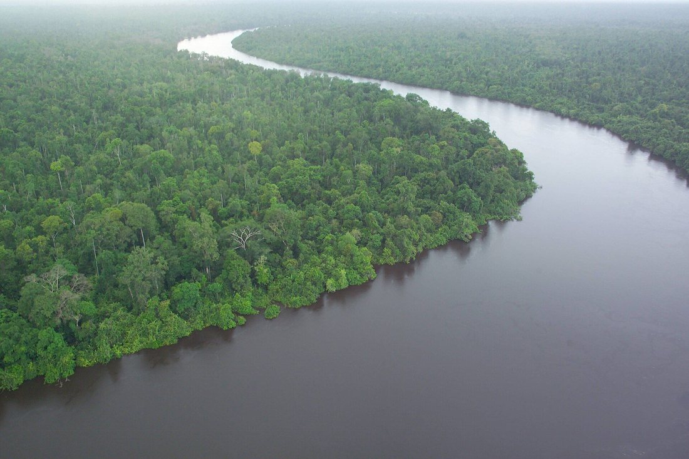
A peat swamp is forest growing on metres of dead plants that never rotted, because the ground stays under water. It holds thousands of years of carbon, and wet peat does not burn.
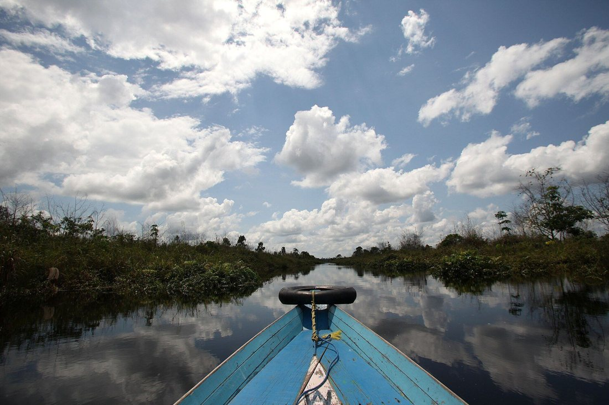
In the 1990s the Mega Rice Project dug some 4,600 km of canals to turn a million hectares of this swamp into rice fields. The scheme failed. The canals still drain the peat.
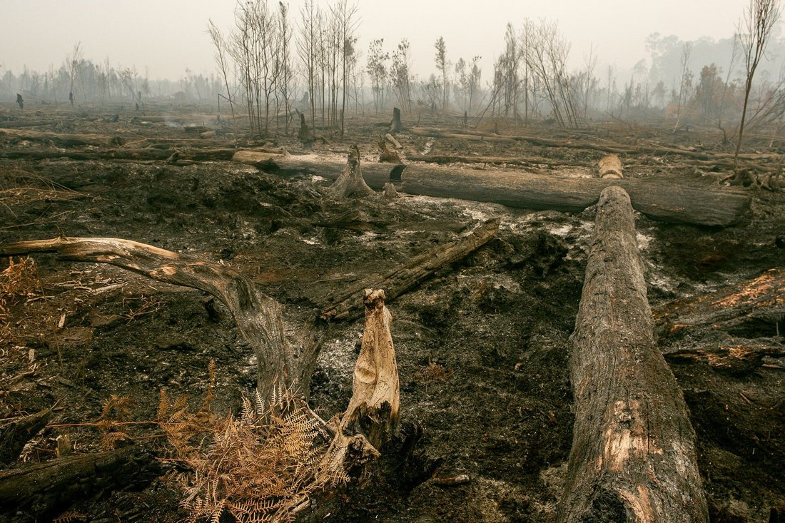
Dry peat catches fire and smoulders under the surface for weeks. Indonesia's 2015 fires, many of them on peat, cost the country USD 16 billion, and the haze shut Singapore's schools.
This is peat degradation: drained, dried out, burnt, then burnt again. Indonesian law counts peat as damaged once the water sits more than 0.4 m below the surface. The hard part is seeing which ground is drying, because in the dry season it lies under cloud, and then under smoke.
Photos: Sugardiman / AusAID and Estey / AusAID (CC BY 2.0), Krisbiyantoro (CC BY-SA 4.0), Wikimedia Commons. Facts: Mongabay 2018, World Bank 2016, Regulation 57 of 2016.
02 / 07
An optical satellite can't see past cloud and smoke, but radar can see the ground
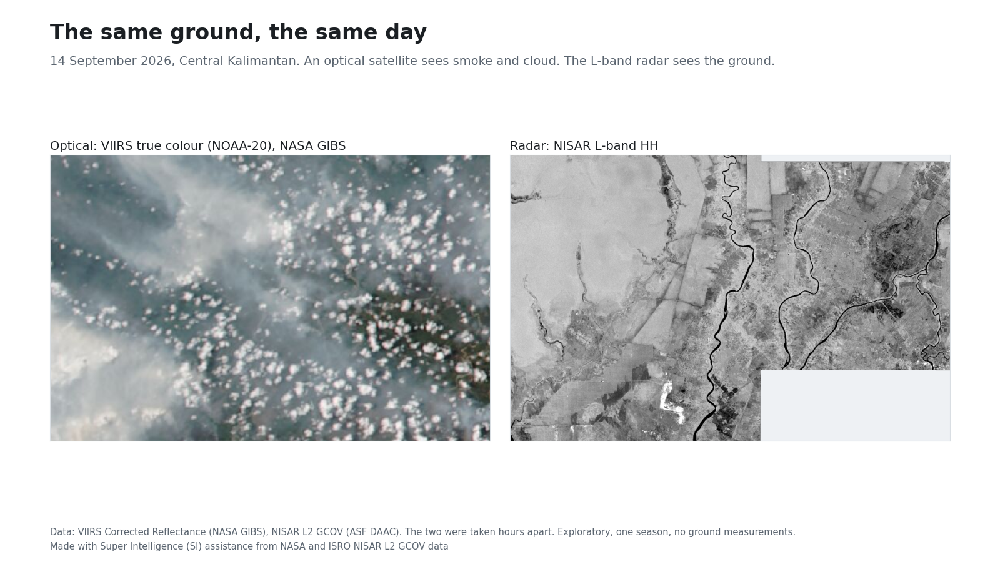
Same place, same day. 14 September 2026. On the left, what an optical satellite saw: smoke and cloud. On the right, what NISAR saw: the land.
NISAR allows us to see beyond the smoke. Launched by NASA and ISRO in 2025, it sends out its own radio waves, 24 cm long. They pass through cloud and smoke, by day or night, and it is built to return every 12 days.
The echo tells wet from dry. On open ground a wet surface sends back a strong echo and a dry one a weak echo. When open peat dries, the echo fades. Clearing fades it too, so we only ever say the echo fell.
VIIRS Corrected Reflectance (NASA GIBS), NISAR L2 GCOV (NASA and ISRO, ASF DAAC). The animation is a schematic made with SI assistance.
03 / 07
How we made the map, in five steps
1Get the radar pictures. NISAR flew over our two study areas about every 12 days from June to November 2026, once at dawn and once at dusk. We lined every picture up on the same 50 m grid.
2Use the forest as a ruler. Thick forest looks the same to the radar all season. So we compare every spot with the forest near it, which cancels out the small differences between one picture and the next.
3Find when the rain stopped. NASA's daily rainfall data gives the day the dry season began and the day the rain came back. A fixed rule reads the dates off, so we cannot pick ones that suit us.
4Mark where the echo got weaker. We compare the start of the dry season with mid October. A spot is marked only if its echo got at least a fifth weaker (1 dB) in both the dawn and the dusk pictures.
5See what came back with the rain. After the first rain, did the echo recover? We add where NASA detected fire and where the peat is, then sort every 1 km square into a group, by rules anyone can read.
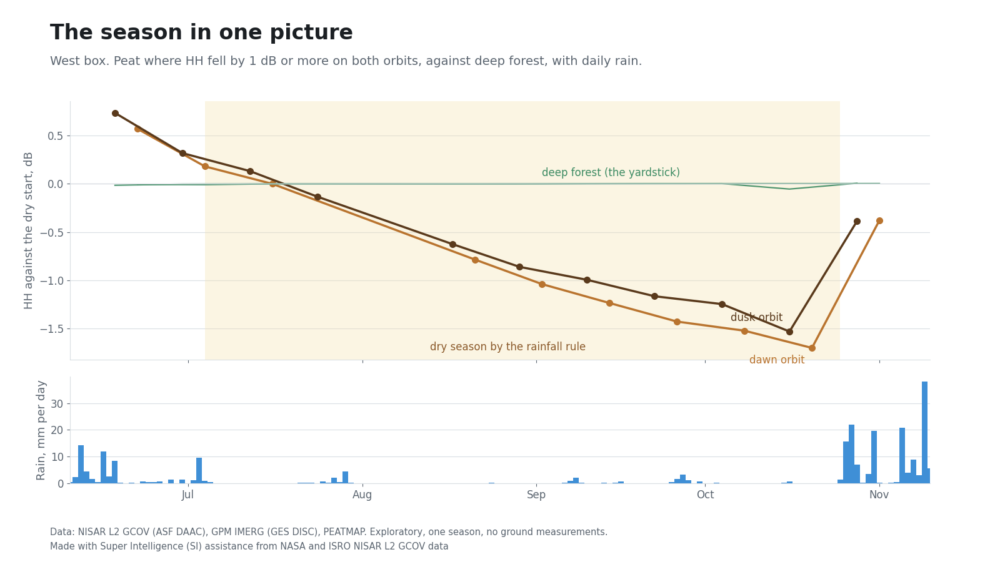
In most places the echo came back after the first rain. In some it stayed weak, and we do not know why. Those are the places to check first.
In technical terms: NISAR L2 GCOV backscatter (L-band, HH and HV) from ascending track 125 and descending track 061, on a 50 m grid, each pass referenced to closed forest. A fall is 1 dB or more on both tracks. Classes are set per 1 km block by rules kept in one file, the ontology.
Figure: pipeline/figures.py. NISAR L2 GCOV (ASF DAAC), GPM IMERG (GES DISC), NASA FIRMS, PEATMAP (CC BY 4.0).
04 / 07
The result is a map anyone can open
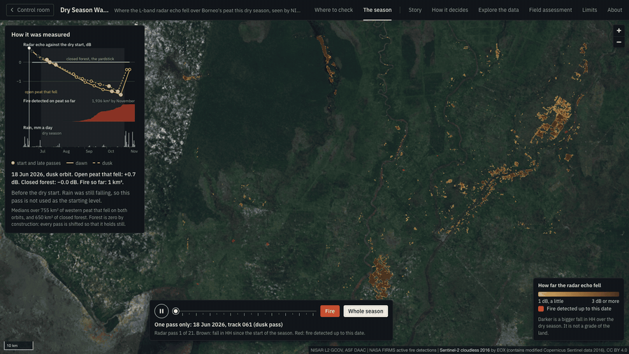
1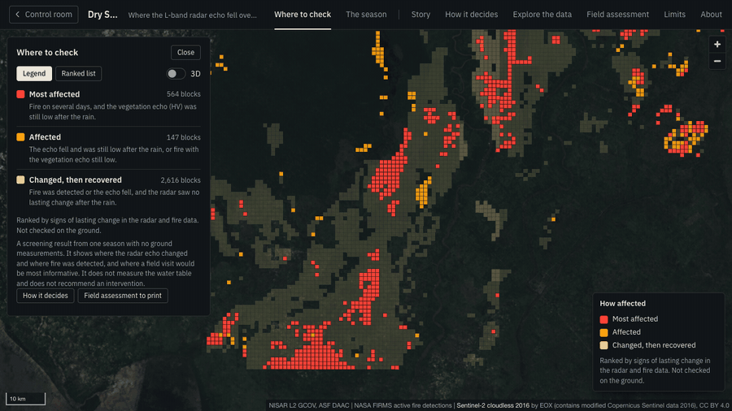
2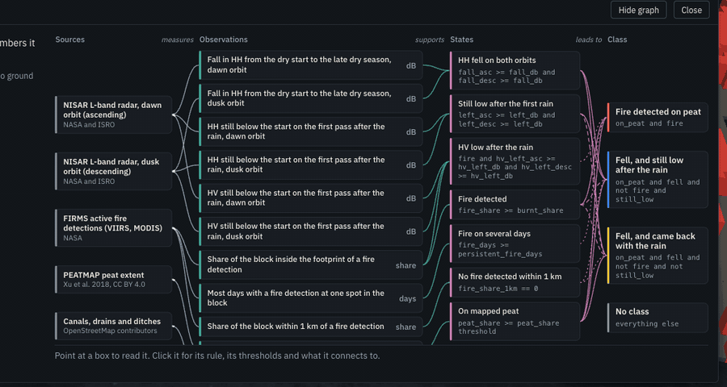
3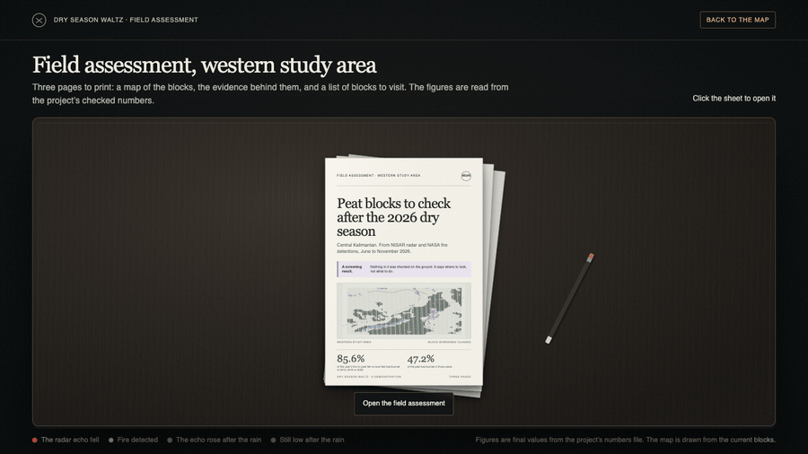
41Play the season. Watch the echo fade pass by pass, with NASA's fire detections building up beside it.
2See where to check. Every 1 km square of peat sorted into three levels, flat or in 3D. Download the list for a GPS.
3Ask why. Each class has a written rule, open to read from the data to the answer. We call it the ontology: 5 sources, 11 observations, 8 states and 3 classes.
4Print it. Three pages for a field team, ending in the squares to visit first.
Live app: tommyquak.github.io/GarugonsSpaceApps. Basemap: Sentinel-2 cloudless 2016 by EOX, CC BY 4.0.
05 / 07
How far to trust it, and what to do with it
How far you can trust it
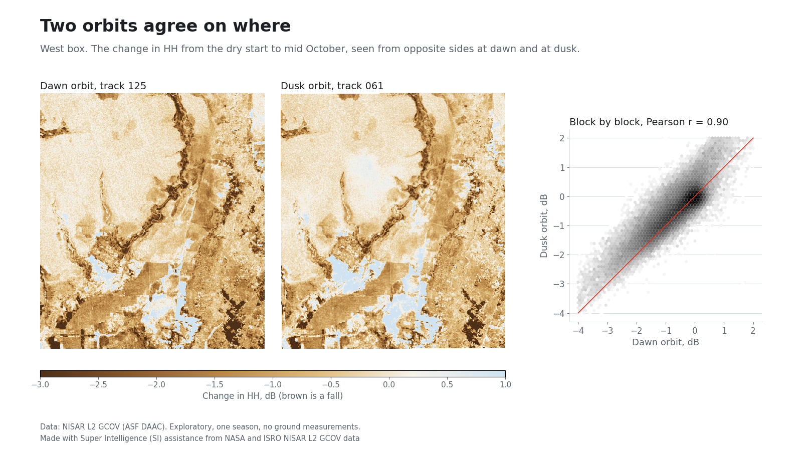
Two orbits agree. Looking from opposite sides, four days apart, they picked the same places (rank correlation 0.83 in the west, 0.87 in the east).
It survived an attack. We asked an SI reviewer to break it. It found a start date just after rain. We fixed it, and the numbers got smaller.
It is not ground truth. Nobody has checked it in the field. It does not predict fire, and it covers one dry season in two areas.
What a restoration agency can do with it
1Take the list. Every 1 km square comes with its coordinates and the evidence behind it, in a file that opens in a GIS or on a GPS.
2Visit the top of the list first. Start where the echo stayed weak after the rain, and where fire was detected. Measure the water depth and look at the canals.
3Restore where the visit confirms it. Indonesia's peat agency works by rewetting, replanting and supporting local livelihoods. Rewetting means blocking canals with dams, filling them in, and drilling deep wells.
4Look again next season. NISAR is built to come back every 12 days. Run after a canal is blocked, the same map could show whether the echo there holds up through the next dry season. We have not tested this.
The map does not choose the remedy. It tells an agency where to look first.
Figure: pipeline/figures.py. Audit: docs/AUDIT.md. Limits: docs/LIMITS.md. Restoration measures: Indonesia's peat and mangrove restoration agency (BRGM), as described by UN DESA.
06 / 07
What comes next
About sixty visits with a field partner: water depth in a dipwell, canals and fire scars, at squares from each class. That calibrates the map, or shows where it is wrong.
The code takes any area. A second and a third season will show how the method behaves in a wet year, and other peatlands can be added.
Drained peat sinks as it rots away. That sinking, called subsidence, is carbon lost to the air (Hooijer et al. 2012). L-band radar has measured it in Central Kalimantan (Tay et al. 2025). With enough NISAR passes we can test for it here.
The list opens in any GIS or GPS. It needs an agency or a field group to take it up.
Team Garugons: Tommy, Reagan, Gabriel, Kalent, Jan Hoe, Anson
Made with Super Intelligence (SI) assistance, from open NASA, ISRO and other data. Sources and licences: submission/LICENCES.md.
07 / 07